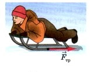

Глава 2. Взаимодействие тел. § 32. Сила трения Сила трения — это сила, возникающая при соприкосновении двух тел и препятствующая их относительному движению. Одной из причин возникновения силы трения является шероховатость поверхностей соприкасающихся тел. Даже гладкие на вид поверхности тел имеют неровности и царапины. Когда одно тело скользит или катится по поверхности другого, эти неровности цепляются друг за друга, что создаёт некоторую силу, задерживающую движение. Другая причина трения — взаимное притяжение молекул соприкасающихся тел. Возникновение силы трения обусловлено главным образом первой причиной, когда поверхности тел шероховаты. Но если поверхности тел хорошо отполированы, при соприкосновении часть их молекул располагается очень близко друг к другу. В этом случае начинает заметно проявляться притяжение между молекулами соприкасающихся тел. Силу трения можно уменьшить во много раз, если ввести между трущимися поверхностями смазку. Слой смазки разъединяет поверхности трущихся тел. В этом случае соприкасаются не поверхности тел, а слои смазки. Смазка же в большинстве случаев жидкая, а трение слоёв жидкости меньше, чем твёрдых поверхностей. Например, на коньках малое трение при скольжении по льду объясняется также действием смазки. Между коньками и льдом образуется тонкий слой воды. В технике в качестве смазки широко применяют различные масла. При скольжении одного тела по поверхности другого возникает трение, которое называют трением скольжения. Например, такое трение возникает при движении саней и лыж по снегу. Если же одно тело не скользит, а катится по поверхности другого, то трение, возникающее при этом, называют трением качения. Так, при движении колёс вагона, автомобиля, при перекатывании брёвен или бочек по земле проявляется трение качения. Силу трения можно измерить. Так, чтобы измерить силу трения скольжения деревянного бруска по доске или по столу, надо прикрепить к нему динамометр. Затем равномерно двигать брусок по доске, держа динамометр горизонтально. Что при этом покажет динамометр? На брусок в горизонтальном направлении действуют две силы. Одна сила — сила упругости пружины динамометра, направленная в сторону движения. Вторая сила — это сила трения, направленная против движения. Так как брусок движется равномерно, то это значит, что равнодействующая этих двух сил равна нулю. Следовательно, эти силы равны по модулю, но противоположны по направлению. Динамометр показывает силу упругости (силу тяги), равную по модулю силе трения. Таким образом, измеряя силу, с которой динамометр действует на тело при его равномерном движении, мы измеряем силу трения. Если на брусок положить груз, например гирю, и измерить по описанному выше способу силу трения, то она окажется больше силы трения, измеренной без груза. Чем больше сила, прижимающая тело к поверхности, тем больше возникающая при этом сила трения. Положив деревянный брусок на круглые палочки, можно измерить силу трения качения. Она оказывается меньше силы трения скольжения. Таким образом, при равных нагрузках сила трения качения всегда меньше силы трения скольжения. Именно поэтому люди ещё в древности применяли катки для перетаскивания больших грузов, а позднее стали широко использовать колесо. Примеры 1. Трение сцепления — сила, возникающая между двумя неподвижными контактирующими телами и препятствующая возникновению относительного движения. Эту силу необходимо преодолеть для того, чтобы привести два контактирующих тела в движение друг относительно друга. 2. Возникновение силы трения качения обусловлено деформацией катящегося тела и опорной поверхностью. Так, колесо, расположенное на горизонтальной поверхности, деформирует последнюю. При движении колеса деформации не успевают восстановиться, поэтому колесу приходится как бы все время взбираться на небольшую горку, из-за чего появляется момент сил, тормозящий качение. 3. Главная особенность силы сопротивления заключается в том, что она возникает только при наличии относительного движения тела и окружающей среды. То есть силы трения покоя в жидкостях и газах не существует. Это приводит к тому, что человек может сдвинуть даже тяжелую баржу, находящуюся на воде. Перейти к теcту
Трение сцепления — сила, возникающая между двумя неподвижными контактирующими телами и препятствующая возникновению относительного движения. Эту силу необходимо преодолеть для того, чтобы привести два контактирующих тела в движение друг относительно друга.
Возникновение силы трения качения обусловлено деформацией катящегося тела и опорной поверхностью. Так, колесо, расположенное на горизонтальной поверхности, деформирует последнюю. При движении колеса деформации не успевают восстановиться, поэтому колесу приходится как бы все время взбираться на небольшую горку, из-за чего появляется момент сил, тормозящий качение.
Главная особенность силы сопротивления заключается в том, что она возникает только при наличии относительного движения тела и окружающей среды. То есть силы трения покоя в жидкостях и газах не существует. Это приводит к тому, что человек может сдвинуть даже тяжелую баржу, находящуюся на воде.